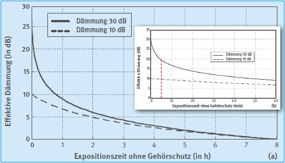

Zunächst werden Angaben zum Lärm und zum Gehörschützer gebraucht, dann kann der Restschallpegel ermittelt werden.
In den Zeiten, in denen mit Sicherheit keine Gehörgefährdung vorliegt, ist das Tragen von Gehörschutz nicht erforderlich.
Der Lärmexpositionspegel LEX,8h ist ein Maß für die mittlere Lärmbelastung über die Arbeitsschicht und wird in dB(A) angegeben. Der Spitzenschalldruckpegel ist ein Maß für den lautesten Lärmpegel am Arbeitsplatz und wird in dB(Cpeak) gemessen. Der Lärmexpositionspegel und der Spitzenschalldruckpegel sind im Rahmen der Gefährdungsbeurteilung vom Arbeitgeber zu ermitteln.
Etwa 85% aller Geräusche am Arbeitsplatz sind mittel- bis hochfrequent (Geräuschklasse HM), etwa 15% aller Geräusche sind im tieffrequenten Bereich angesiedelt (Geräuschklasse L).
Beispiele zur Geräuschklasse HM:
Druckluftdüsen, Kreissägen, Schleifmaschinen, Spritzgießmaschinen, Zentrifugen
Beispiel zur Geräuschklasse L:
Bagger, Feuerungen, Kollergänge, Kolbenkompressoren
Die Zuordnung zu einer der beiden Geräuschklassen kann nach dem subjektiven Klangeindruck (siehe Beispiele) oder nach Bestimmung der Schallpegeldifferenz LC - LA erfolgen.
| LC - LA ≤ 5 dB | Geräuschklasse HM |
| LC - LA > 5 dB | Geräuschklasse L |
Dabei ist:
Der Schalldruckpegel kann der Tages-Lärmexpositionspegel oder der mit der Tätigkeit verbundene äquivalente Dauerschalldruckpegel sein. Wenn die Geräuschklassen im Laufe einer Arbeitsschicht wechseln, sollte der Tages-Lärmexpositionspegel zur Beurteilung verwendet werden.
Siehe Anhang 2 der Regel „Benutzung von Gehörschutz“ (BGR/GUV-R 194).
Aus der Kennzeichnung des Gehörschützers sind unter anderem folgende Dämmwerte zu entnehmen:
| H-Wert | (High = Dämmwert für hohe Frequenz) |
| M-Wert | (Medium = Dämmwert für mittlere Frequenzen) |
| L-Wert | (Low = Dämmwert für tiefe Frequenzen) |
| SNR-Wert | (Single Number Rating = Einzahlschalldämmwert) |
Zur Auswahl von Gehörschutz werden üblicherweise die M- und L-Werte herangezogen.
Kontrollen der tatsächlichen Schutzwirkung von Gehörschützern haben ergeben, dass die bei der Baumusterprüfung erzielten Dämmwerte in der Praxis meist nicht erreicht werden.
Als Korrekturwerte Ks für die Benutzung von Gehörschutz in der Praxis werden verwendet:
| • | Vor Gebrauch zu formende Gehörschutzstöpsel | Ks = 9 dB |
| • | Fertig geformte Gehörschutzstöpsel | Ks = 5 dB |
| • | Bügelstöpsel | Ks = 5 dB |
| • | Kapselgehörschutz | Ks = 5 dB |
| • | Otoplastiken mit Funktionskontrolle* | Ks = 3 dB |
Bei Extremsituationen mit Verwendung von Kombinationen aus Stöpseln und Kapseln ist je nach Stöpselart ein Wert von Ks = 9 dB bzw. von 5 dB anzunehmen.
Der Einsatz von Otoplastiken ohne Funktionskontrolle mit einem Abschlag von 6 dB ist entsprechend TRLV Lärm Teil 3 (Lärmminderungsmaßnahmen) nicht mehr zulässig. An diesen Produkten ist kurzfristig eine Funktionskontrolle durchzuführen.
Für tieffrequente Spitzenschalldruckpegel sind entsprechend der Regel „Benutzung von Gehörschutz“ (BGR/GUV-R 194) besondere Regeln zu beachten. Die Schalldämmung wird durch dabei entstehende Leckagen weiter verringert. Es ist ein zusätzlicher Praxisabschlag von 5 dB erforderlich.
Brillenbügel können die Schutzwirkung von Kapselgehörschützern erheblich reduzieren.
Geräuschklasse HM:
Restschallpegel in dB(A) = Lärmexpositionspegel – (M-Wert - KS)
Geräuschklasse L:
Restschallpegel in dB(A) = Lärmexpositionspegel – (L-Wert - KS)
Schweißnähte an Blechen werden mit einer Winkelschleifmaschine nachbearbeitet.
| Restschallpegel in dB(A) | = Lärmexpositionspegel - (M-Wert - KS)
= 97 - (25 - 5) = 77 dB(A) |
Folgerung:
Die Restschallpegel unter dem Gehörschützer liegen in dem empfohlenen Pegelbereich. Der Gehörschützer ist für den Beschäftigten an diesem Arbeitsplatz geeignet.
Es gibt noch andere Auswahlverfahren (siehe Regel "Benutzung von Gehörschützern" [BGR/GUV-R 194]).
Das konsequente Tragen von Gehörschutz ist für den Restschallpegel am Ohr des Benutzers entscheidend, denn bei einem Gehörschützer mit 30 dB Schalldämmung reduziert sich die Schutzwirkung bei 5 Minuten Nichttragen im Lärm auf weniger als 20 dB.

Abb. 12 Effektive Schalldämmung von Gehörschutz